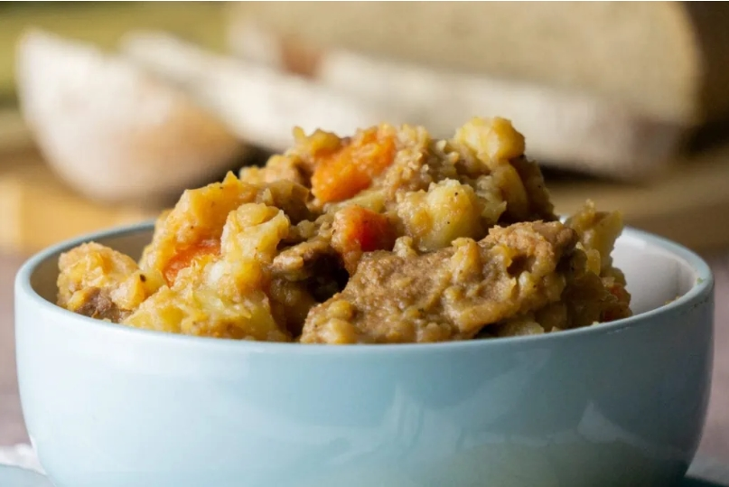

приготовление:
-
Очистить и мелко нарезать 200 г репчатого лука. В большой кастрюле растопить 20 г сливочного масла, добавить лук и обжаривать несколько минут до мягкости.
-
Добавить 500 г говяжьего фарша. Разбивая его лопаткой на мелкие кусочки, обжаривать до полного изменения цвета.
-
Очистить 200 г моркови и 200 г турнепса, нарезать кубиками и добавить к мясу. Перемешать и готовить 5 минут.
-
Очистить 4 крупные картофелины, разрезать каждую примерно на 8 частей и добавить в кастрюлю. Влить 400 мл воды, добавить соль, чёрный перец и лавровый лист. Перемешать, накрыть крышкой и довести до кипения. Убавить огонь до минимального и тушить 30 минут.
-
Перемешать и тушить ещё 20 минут. Снять с огня и дать стовису настояться под крышкой 15 минут.